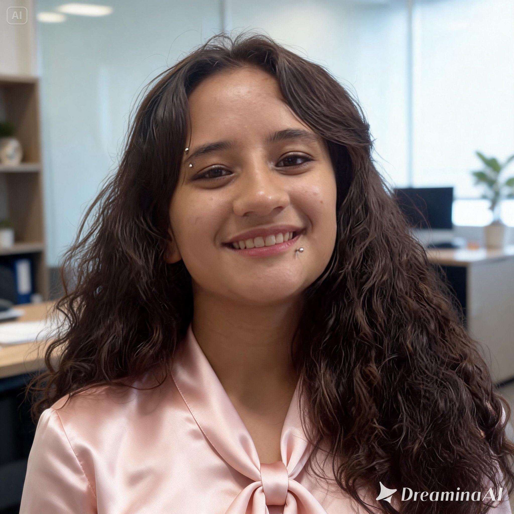

Estudante de Tecnologia da Informação | Desenvolvimento de Sistemas
Estudante do Ensino Médio integrado ao curso técnico de Desenvolvimento de Sistemas no SESI e SENAI, com interesse em redes de computadores, suporte técnico, infraestrutura de TI e desenvolvimento de software. Possuo perfil organizado, proativo e facilidade para aprender novas tecnologias.
Desenvolvimento de sistema web/software para aplicação prática em tecnologia: experiência em lógica de programação, desenvolvimento web, organização de sistemas, resolução de problemas e utilização de ferramentas tecnológicas para criação de soluções práticas.
Desenvolvimento de projeto educacional voltado à inclusão de pessoas com deficiência visual e auditiva: aprendizado sobre acessibilidade, inclusão social, adaptação de recursos educacionais, empatia e desenvolvimento de soluções tecnológicas voltadas à melhoria da comunicação e da experiência de aprendizagem.
Participação em olimpíadas de conhecimento como:
Olimpíada Brasileira de Robótica (OBR):
desenvolvimento do raciocínio lógico, resolução de
problemas, trabalho em equipe e conhecimentos em
tecnologia, programação e robótica.
Olimpíada Brasileira de Astronomia (OBA):
ampliação dos conhecimentos em astronomia, física e
ciências espaciais, além do desenvolvimento da curiosidade
científica e da capacidade analítica.
Olimpíada Nacional de Ciências (ONC):
aprofundamento em conteúdos de ciências da natureza,
estímulo ao pensamento crítico, interpretação de questões
e aplicação prática do conhecimento científico.